Comparative analysis of the Kluc tumor scRNAseq data
heinin
2024-02-26
Last updated: 2024-03-19
Checks: 5 2
Knit directory: PD1_mm/
This reproducible R Markdown analysis was created with workflowr (version 1.7.1). The Checks tab describes the reproducibility checks that were applied when the results were created. The Past versions tab lists the development history.
The R Markdown file has unstaged changes. To know which version of
the R Markdown file created these results, you’ll want to first commit
it to the Git repo. If you’re still working on the analysis, you can
ignore this warning. When you’re finished, you can run
wflow_publish to commit the R Markdown file and build the
HTML.
Great job! The global environment was empty. Objects defined in the global environment can affect the analysis in your R Markdown file in unknown ways. For reproduciblity it’s best to always run the code in an empty environment.
The command set.seed(20240223) was run prior to running
the code in the R Markdown file. Setting a seed ensures that any results
that rely on randomness, e.g. subsampling or permutations, are
reproducible.
Great job! Recording the operating system, R version, and package versions is critical for reproducibility.
Nice! There were no cached chunks for this analysis, so you can be confident that you successfully produced the results during this run.
Using absolute paths to the files within your workflowr project makes it difficult for you and others to run your code on a different machine. Change the absolute path(s) below to the suggested relative path(s) to make your code more reproducible.
| absolute | relative |
|---|---|
| /home/hnatri/PD1_mm/ | . |
| /home/hnatri/PD1_mm/code/utilities.R | code/utilities.R |
| /home/hnatri/PD1_mm/code/PD1_mm_themes.R | code/PD1_mm_themes.R |
| /home/hnatri/PD1_mm/code/CART_plot_functions.R | code/CART_plot_functions.R |
| /home/hnatri/PD1_mm/PD1_CART_celltype_markers_top20.tsv | PD1_CART_celltype_markers_top20.tsv |
Great! You are using Git for version control. Tracking code development and connecting the code version to the results is critical for reproducibility.
The results in this page were generated with repository version cef63a7. See the Past versions tab to see a history of the changes made to the R Markdown and HTML files.
Note that you need to be careful to ensure that all relevant files for
the analysis have been committed to Git prior to generating the results
(you can use wflow_publish or
wflow_git_commit). workflowr only checks the R Markdown
file, but you know if there are other scripts or data files that it
depends on. Below is the status of the Git repository when the results
were generated:
Unstaged changes:
Modified: analysis/comparative_analysis.Rmd
Note that any generated files, e.g. HTML, png, CSS, etc., are not included in this status report because it is ok for generated content to have uncommitted changes.
These are the previous versions of the repository in which changes were
made to the R Markdown (analysis/comparative_analysis.Rmd)
and HTML (docs/comparative_analysis.html) files. If you’ve
configured a remote Git repository (see ?wflow_git_remote),
click on the hyperlinks in the table below to view the files as they
were in that past version.
| File | Version | Author | Date | Message |
|---|---|---|---|---|
| Rmd | cef63a7 | heinin | 2024-03-19 | Added DEGs by timepoint |
| html | cef63a7 | heinin | 2024-03-19 | Added DEGs by timepoint |
| Rmd | c63a16f | heinin | 2024-03-14 | Changed Mono1 to M2, added an analysis file to look at exhaustion markers |
| html | c63a16f | heinin | 2024-03-14 | Changed Mono1 to M2, added an analysis file to look at exhaustion markers |
| Rmd | f1e402a | heinin | 2024-03-13 | Added Seurat DEGs |
| html | f1e402a | heinin | 2024-03-13 | Added Seurat DEGs |
| Rmd | d62a214 | heinin | 2024-03-12 | Saving DEG overlap tables |
| html | d62a214 | heinin | 2024-03-12 | Saving DEG overlap tables |
| Rmd | 4cf95d7 | heinin | 2024-03-12 | Top markers and DEGs for all timepoints combined |
| html | 4cf95d7 | heinin | 2024-03-12 | Top markers and DEGs for all timepoints combined |
| Rmd | ea97b27 | heinin | 2024-02-27 | Filtering, comparative analysis |
| html | ea97b27 | heinin | 2024-02-27 | Filtering, comparative analysis |
| Rmd | 18c1bd4 | heinin | 2024-02-27 | Cell type proportion testing |
| html | 18c1bd4 | heinin | 2024-02-27 | Cell type proportion testing |
| Rmd | 3e207b9 | heinin | 2024-02-26 | Added scImmuCC annotations |
| Rmd | 196db6a | heinin | 2024-02-26 | Starting the comparative analysis |
Introduction
Comparing treatment groups/timepoints.
Packages and environment variables
suppressPackageStartupMessages({
#library(cli)
library(Seurat)
library(SeuratObject)
library(SeuratDisk)
library(tidyverse)
library(tibble)
library(ggplot2)
library(ggpubr)
library(ggrepel)
library(workflowr)
library(googlesheets4)
library(scProportionTest)
library(UpSetR)})
setwd("/home/hnatri/PD1_mm/")
set.seed(9999)
options(ggrepel.max.overlaps = Inf)
# Colors, themes, cell type markers, and plot functions
source("/home/hnatri/PD1_mm/code/utilities.R")
source("/home/hnatri/PD1_mm/code/PD1_mm_themes.R")
source("/home/hnatri/PD1_mm/code/CART_plot_functions.R")Importing data
seurat_data <- readRDS("/tgen_labs/banovich/BCTCSF/PD1_mm_Seurat/PD1_mm_Seurat_merged.Rds")DimPlot of cell type annotations
celltypes <- sort(as.character(unique(seurat_data$celltype)))
plot_colors <- colorRampPalette(brewer.pal(11, "Paired"))(length(celltypes))
names(plot_colors) <- celltypes
DimPlot(seurat_data,
group.by = "celltype",
reduction = "umap",
raster = T,
label = T,
cols = plot_colors) &
coord_fixed(ratio = 1) &
theme_bw() &
NoLegend()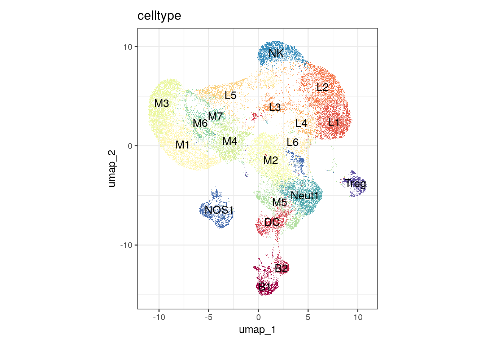
DimPlot(seurat_data,
group.by = "celltype",
split.by = "Treatment",
reduction = "umap",
raster = T,
#label = T,
cols = plot_colors) &
coord_fixed(ratio = 1) &
theme_bw() &
NoLegend()
Cell type proportion differences
In scatter plots, the proportions of cell types in each pair of treatment groups are plotted against each other with one group on each axis. The forest plots show the significance level.
unique(seurat_data$Treatment)[1] "ADJ" "CTRL" "NEO" unique(seurat_data$Day)[1] 16 12table(seurat_data$celltype, seurat_data$Treatment)
ADJ CTRL NEO
M1 1090 2163 1603
M2 436 1444 2735
M3 910 1634 1452
L1 571 1420 1475
Neut1 526 1498 1321
L2 1117 1045 1063
NK 579 992 1167
M4 449 1117 1054
M5 502 921 1107
M6 252 665 1454
NOS1 251 1619 498
DC 379 773 772
M7 132 763 590
B1 311 568 553
Treg 178 521 523
M8 160 403 615
B2 171 320 347
L3 269 305 225
L4 50 154 371
M9 20 281 185create_clusterpropplot(seurat_data,
group_var = "Treatment",
group1 = "ADJ",
group2 = "CTRL",
plot_var = "celltype",
plot_colors = plot_colors,
var_names = c("ADJ", "CTRL"),
legend_title = "Treatment")Warning: `aes_string()` was deprecated in ggplot2 3.0.0.
ℹ Please use tidy evaluation idioms with `aes()`.
ℹ See also `vignette("ggplot2-in-packages")` for more information.
This warning is displayed once every 8 hours.
Call `lifecycle::last_lifecycle_warnings()` to see where this warning was
generated.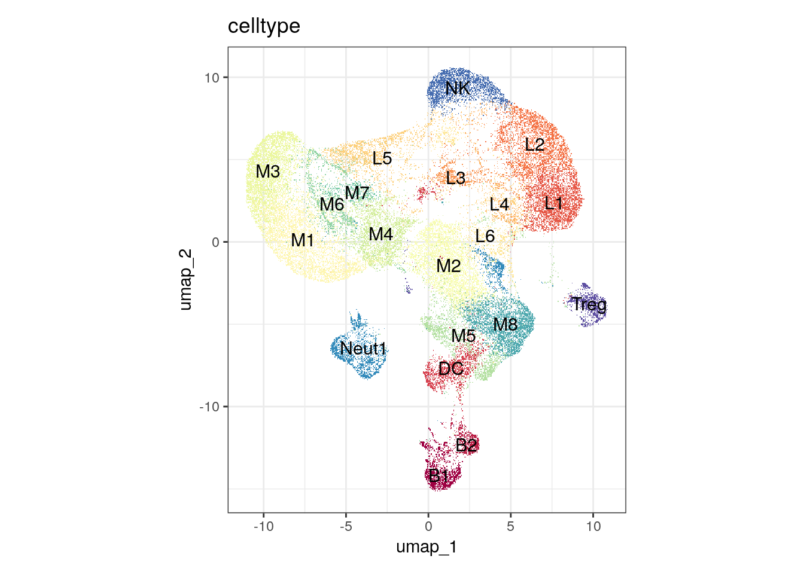
create_clusterpropplot(seurat_data,
group_var = "Treatment",
group1 = "NEO",
group2 = "CTRL",
plot_var = "celltype",
plot_colors = plot_colors,
var_names = c("NEO", "CTRL"),
legend_title = "Treatment")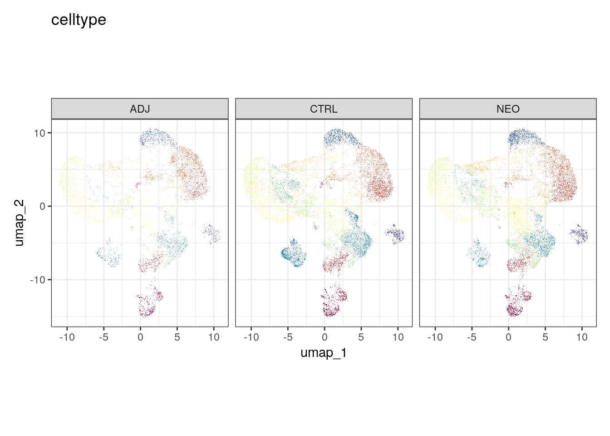
create_clusterpropplot(seurat_data,
group_var = "Treatment",
group1 = "ADJ",
group2 = "NEO",
plot_var = "celltype",
plot_colors = plot_colors,
var_names = c("ADJ", "NEO"),
legend_title = "Treatment")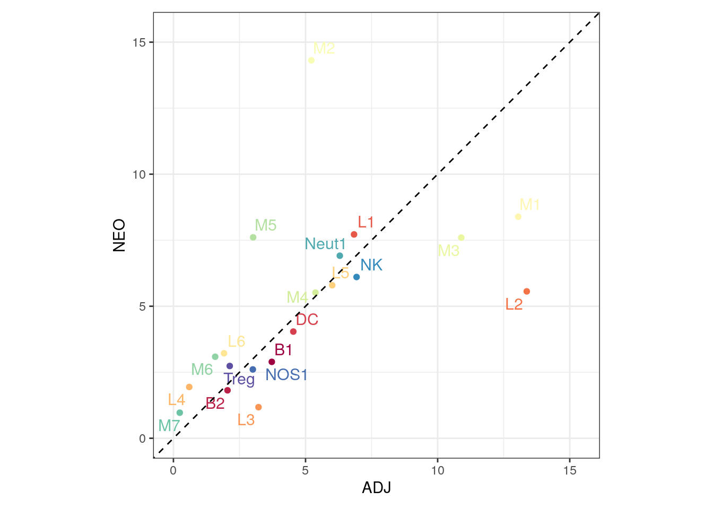
# Day 12
create_clusterpropplot(subset(seurat_data, subset = Day == 12),
group_var = "Treatment",
group1 = "NEO",
group2 = "CTRL",
plot_var = "celltype",
plot_colors = plot_colors,
var_names = c("NEO", "CTRL"),
legend_title = "Treatment, Day 12")
# Day 16
create_clusterpropplot(subset(seurat_data, subset = Day == 16),
group_var = "Treatment",
group1 = "ADJ",
group2 = "CTRL",
plot_var = "celltype",
plot_colors = plot_colors,
var_names = c("ADJ", "CTRL"),
legend_title = "Treatment, Day 16")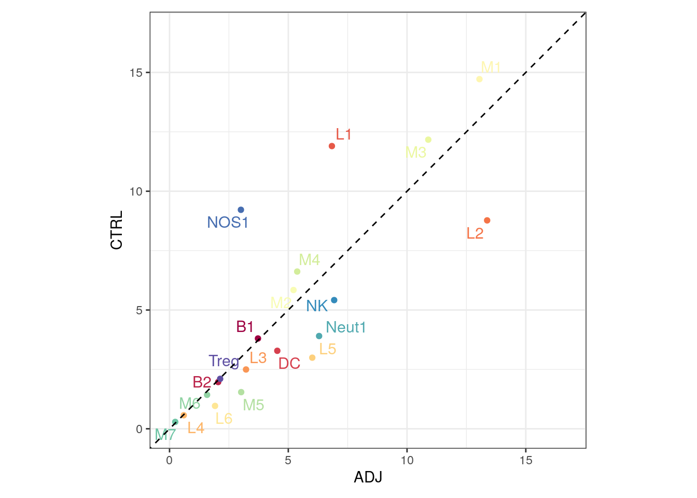
create_clusterpropplot(subset(seurat_data, subset = Day == 16),
group_var = "Treatment",
group1 = "NEO",
group2 = "CTRL",
plot_var = "celltype",
plot_colors = plot_colors,
var_names = c("NEO", "CTRL"),
legend_title = "Treatment, Day 16")
create_clusterpropplot(subset(seurat_data, subset = Day == 16),
group_var = "Treatment",
group1 = "ADJ",
group2 = "NEO",
plot_var = "celltype",
plot_colors = plot_colors,
var_names = c("ADJ", "NEO"),
legend_title = "Treatment, Day 16")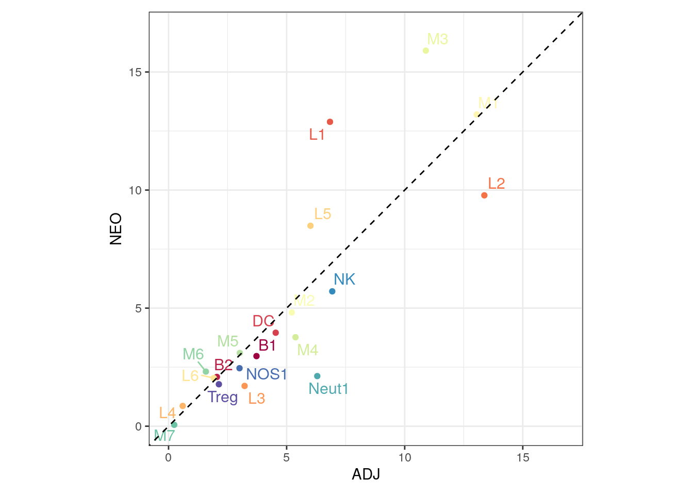
# Using scProportionTest
prop_test <- sc_utils(seurat_data)
prop_test <- permutation_test(
prop_test, cluster_identity = "celltype",
sample_1 = "CTRL", sample_2 = "ADJ",
sample_identity = "Treatment")
perm_plot <- permutation_plot(prop_test)
perm_plot + scale_colour_manual(values = c("tomato", "azure2")) +
#NoLegend() +
ggtitle("ADJ vs. CTRL, all timepoints")Scale for colour is already present.
Adding another scale for colour, which will replace the existing scale.
prop_test <- permutation_test(
prop_test, cluster_identity = "celltype",
sample_1 = "CTRL", sample_2 = "NEO",
sample_identity = "Treatment")
perm_plot <- permutation_plot(prop_test)
perm_plot + scale_colour_manual(values = c("tomato", "azure2")) +
#NoLegend() +
ggtitle("NEO vs. CTRL, all timepoints")Scale for colour is already present.
Adding another scale for colour, which will replace the existing scale.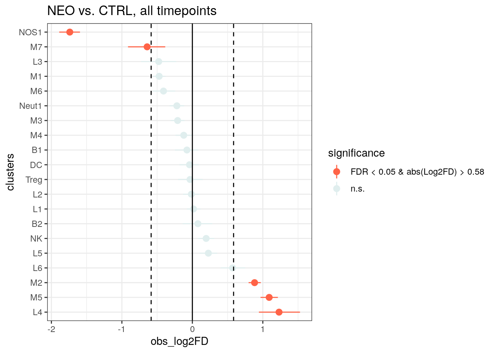
prop_test <- permutation_test(
prop_test, cluster_identity = "celltype",
sample_1 = "ADJ", sample_2 = "NEO",
sample_identity = "Treatment")
perm_plot <- permutation_plot(prop_test)
perm_plot + scale_colour_manual(values = c("tomato", "azure2")) +
#NoLegend() +
ggtitle("NEO vs. ADJ, all timepoints")Scale for colour is already present.
Adding another scale for colour, which will replace the existing scale.
# Day 12 only
# For day 12, no ADJ sample
prop_test <- sc_utils(subset(seurat_data, subset = Day == 12))
prop_test <- permutation_test(
prop_test, cluster_identity = "celltype",
sample_1 = "CTRL", sample_2 = "NEO",
sample_identity = "Treatment")
perm_plot <- permutation_plot(prop_test)
perm_plot + scale_colour_manual(values = c("tomato", "azure2")) +
#NoLegend() +
ggtitle("NEO vs. CTRL, day 12")Scale for colour is already present.
Adding another scale for colour, which will replace the existing scale.
# Day 16 only
prop_test <- sc_utils(subset(seurat_data, subset = Day == 16))
prop_test <- permutation_test(
prop_test, cluster_identity = "celltype",
sample_1 = "CTRL", sample_2 = "ADJ",
sample_identity = "Treatment")
perm_plot <- permutation_plot(prop_test)
perm_plot + scale_colour_manual(values = c("tomato", "azure2")) +
#NoLegend() +
ggtitle("ADJ vs. CTRL, day 16")Scale for colour is already present.
Adding another scale for colour, which will replace the existing scale.
prop_test <- permutation_test(
prop_test, cluster_identity = "celltype",
sample_1 = "CTRL", sample_2 = "NEO",
sample_identity = "Treatment")
perm_plot <- permutation_plot(prop_test)
perm_plot + scale_colour_manual(values = c("tomato", "azure2")) +
#NoLegend() +
ggtitle("NEO vs. CTRL, day 16")Scale for colour is already present.
Adding another scale for colour, which will replace the existing scale.
prop_test <- permutation_test(
prop_test, cluster_identity = "celltype",
sample_1 = "ADJ", sample_2 = "NEO",
sample_identity = "Treatment")
perm_plot <- permutation_plot(prop_test)
perm_plot + scale_colour_manual(values = c("tomato", "azure2")) +
#NoLegend() +
ggtitle("NEO vs. ADJ, day 16")Scale for colour is already present.
Adding another scale for colour, which will replace the existing scale.
Cluster markers
# Dropping MT and RP genes before calling markers
RBMTgenes <- grep(pattern = "^RP[SL]|^MRP[SL]|^MT-",
x = rownames(seurat_data@assays$RNA_human@data),
value = TRUE, invert = TRUE)
seurat_data <- subset(seurat_data, features = RBMTgenes)
# Top markers for each cluster
markers <- presto::wilcoxauc(seurat_data,
group_by = "celltype",
assay = "data",
seurat_assay = "RNA_human")
sig_markers <- markers %>% filter(auc>0.8, padj<0.01)
dim(sig_markers)[1] 2206 10table(sig_markers$group)
B1 B2 DC L1 L2 L3 M1 M2 M3 M5 M8 M9 Neut1
28 73 42 10 32 997 74 37 135 25 65 487 53
NK NOS1 Treg
20 15 113 table(sig_markers$group) %>% as.data.frame() %>%
ggplot(aes(x = reorder(Var1, -Freq), y = Freq, fill = Var1)) +
geom_bar(stat = "identity") +
scale_fill_manual(values = plot_colors) +
theme_classic2() +
theme(axis.text.x = element_text(angle = 45, vjust = 1, hjust = 1)) +
NoLegend() +
xlab("Cell type") +
ylab("# cell type markers")
# Saving to a file
write.table(sig_markers, "/scratch/hnatri/CART/PD1_CART_celltype_markers.tsv",
sep = "\t", quote = F, row.names = F)
# Top markers for each cluster
top_markers <- markers %>% group_by(group) %>% slice_max(order_by = auc, n = 20)
write.table(top_markers, "/home/hnatri/PD1_mm/PD1_CART_celltype_markers_top20.tsv",
quote = F, row.names = F, sep = "\t")DEGs between treatment groups
# For each cluster, top DEGs between NEO and CTRL
DEG_NEO_CTRL <- lapply(unique(seurat_data$celltype), function(xx){
data_subset <- subset(seurat_data, subset = celltype == xx)
if (all((c("NEO", "CTRL") %in% data_subset$Treatment) == c(T, T))){
markers <- presto::wilcoxauc(data_subset,
group_by = "Treatment",
groups_use = c("NEO", "CTRL"),
assay = "data",
seurat_assay = "RNA_human")
markers$celltype <- xx
return(markers)
} else {
return(NULL)
}
})
names(DEG_NEO_CTRL) <- unique(seurat_data$celltype)
DEG_NEO_CTRL[sapply(DEG_NEO_CTRL, is.null)] <- NULL
DEG_NEO_CTRL_df <- as.data.frame(do.call(rbind, DEG_NEO_CTRL))
DEG_NEO_CTRL_df_sig <- DEG_NEO_CTRL_df %>%
filter(group=="NEO",
padj < 0.01,
abs(logFC) > 10,
(pct_in > 50 | pct_out > 50))
# Saving to a file
write.table(DEG_NEO_CTRL_df_sig,
"/scratch/hnatri/CART/PD1_CART_DEG_NEO_CTRL_sig.tsv",
sep = "\t", quote = F, row.names = F)
# Comparing to the Seurat function
DEG_NEO_CTRL_Seurat <- lapply(unique(seurat_data$celltype), function(xx){
data_subset <- subset(seurat_data, subset = celltype == xx)
Idents(data_subset) <- data_subset$Treatment
if (all((c("NEO", "CTRL") %in% data_subset$Treatment) == c(T, T))){
markers <- FindMarkers(data_subset,
ident.1 = "NEO",
ident.2 = "CTRL",
assay = "RNA_human",
verbose = F)
markers$feature <- rownames(markers)
markers$celltype <- xx
return(markers)
} else {
return(NULL)
}
})
names(DEG_NEO_CTRL_Seurat) <- unique(seurat_data$celltype)
DEG_NEO_CTRL_Seurat[sapply(DEG_NEO_CTRL_Seurat, is.null)] <- NULL
DEG_NEO_CTRL_Seurat_df <- as.data.frame(do.call(rbind, DEG_NEO_CTRL_Seurat))
# Distribution of log2FC
hist(DEG_NEO_CTRL_Seurat_df$avg_log2FC, breaks = 100)
DEG_NEO_CTRL_Seurat_df_sig <- DEG_NEO_CTRL_Seurat_df %>%
filter(p_val_adj < 0.01,
abs(avg_log2FC) > 100,
(pct.1 > 0.50 | pct.2 > 0.50))
# Saving to a file
write.table(DEG_NEO_CTRL_Seurat_df_sig,
"/scratch/hnatri/CART/PD1_CART_DEG_NEO_CTRL_Seurat_sig.tsv",
sep = "\t", quote = F, row.names = F)
# DEGs shared between and unique to each method
length(intersect(DEG_NEO_CTRL_Seurat_df_sig$feature, DEG_NEO_CTRL_df_sig$feature))[1] 21length(setdiff(DEG_NEO_CTRL_Seurat_df_sig$feature, DEG_NEO_CTRL_df_sig$feature))[1] 36length(setdiff(DEG_NEO_CTRL_df_sig$feature, DEG_NEO_CTRL_Seurat_df_sig$feature))[1] 8hist(DEG_NEO_CTRL_Seurat_df_sig$avg_log2FC)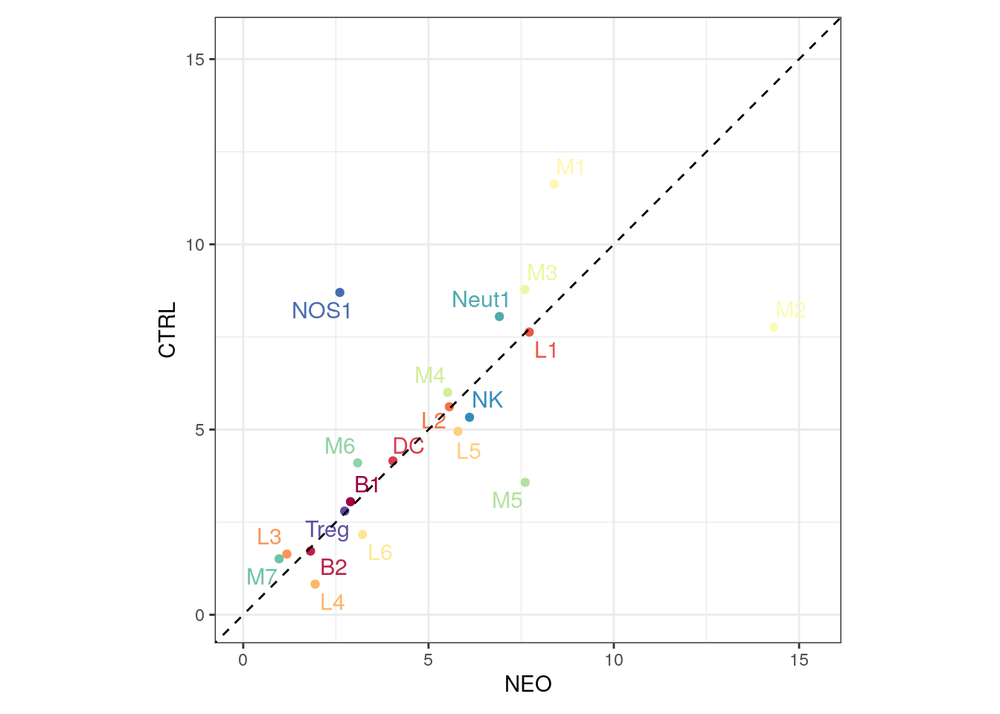
hist(DEG_NEO_CTRL_df_sig$logFC)
hist(DEG_NEO_CTRL_Seurat_df_sig$p_val_adj)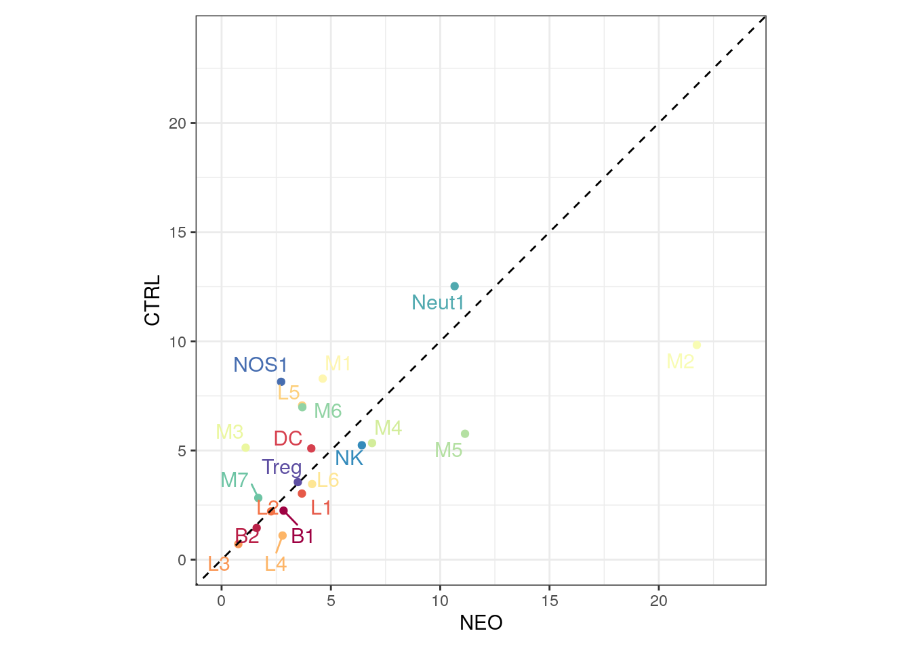
| Version | Author | Date |
|---|---|---|
| f1e402a | heinin | 2024-03-13 |
hist(DEG_NEO_CTRL_df_sig$padj)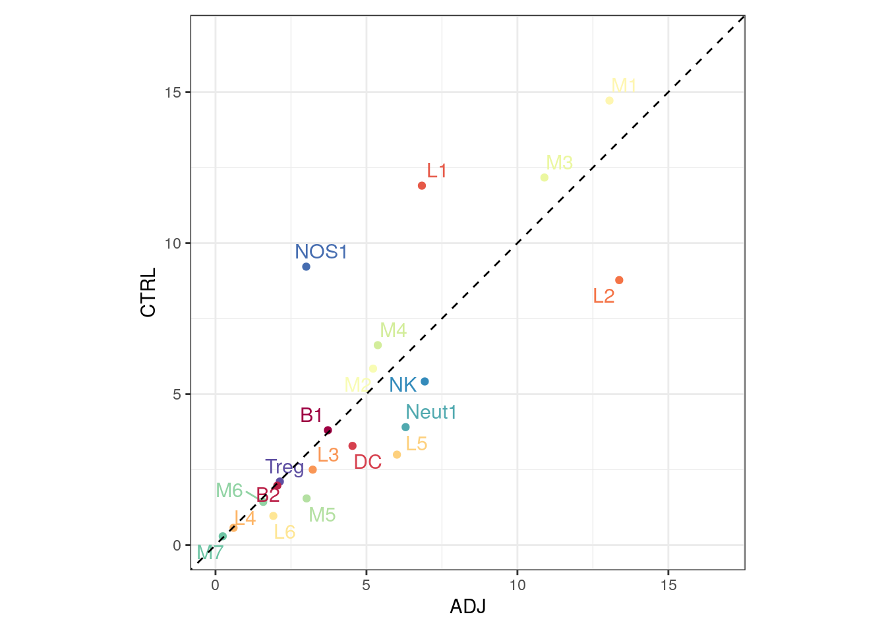
| Version | Author | Date |
|---|---|---|
| f1e402a | heinin | 2024-03-13 |
# Comparing logFC values
merge(DEG_NEO_CTRL_Seurat_df, DEG_NEO_CTRL_df, by = c("feature", "celltype")) %>%
ggplot(aes(x = avg_log2FC, y = logFC)) +
geom_point() +
theme_classic2()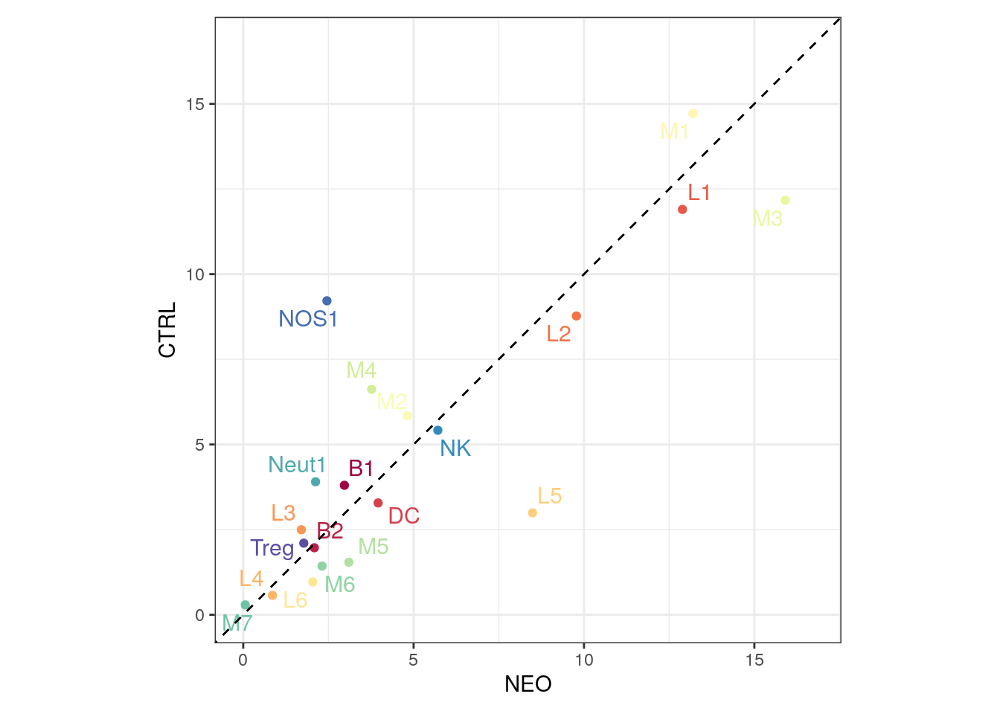
| Version | Author | Date |
|---|---|---|
| f1e402a | heinin | 2024-03-13 |
# Comparing logFC values for significant DEGs only
merge(DEG_NEO_CTRL_Seurat_df_sig, DEG_NEO_CTRL_df_sig, by = c("feature", "celltype")) %>%
ggplot(aes(x = avg_log2FC, y = logFC)) +
geom_point() +
theme_classic2()
| Version | Author | Date |
|---|---|---|
| f1e402a | heinin | 2024-03-13 |
# Comparing adjusted p-values
merge(DEG_NEO_CTRL_Seurat_df, DEG_NEO_CTRL_df, by = c("feature", "celltype")) %>%
ggplot(aes(x = p_val_adj, y = padj)) +
geom_point() +
theme_classic2()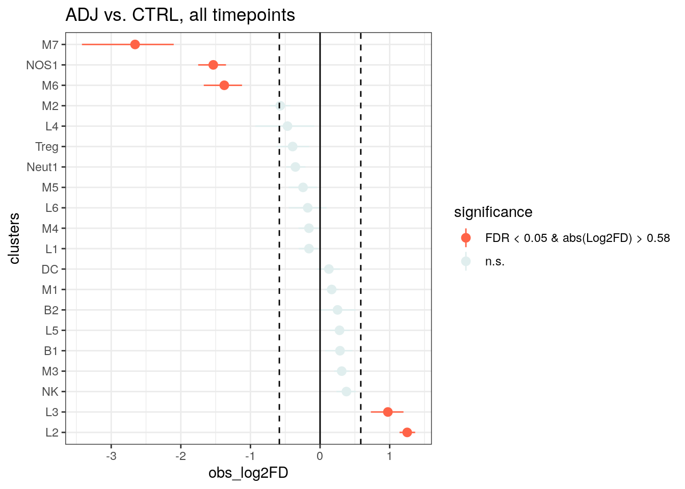
| Version | Author | Date |
|---|---|---|
| f1e402a | heinin | 2024-03-13 |
# Comparing adjusted p-values for significant DEGs
merge(DEG_NEO_CTRL_Seurat_df_sig, DEG_NEO_CTRL_df_sig, by = c("feature", "celltype")) %>%
ggplot(aes(x = p_val_adj, y = padj)) +
geom_point() +
theme_classic2()
| Version | Author | Date |
|---|---|---|
| f1e402a | heinin | 2024-03-13 |
# Plotting numbers of DEGs
table(DEG_NEO_CTRL_df_sig$celltype) %>% as.data.frame() %>%
ggplot(aes(x = reorder(Var1, -Freq), y = Freq, fill = Var1)) +
geom_bar(stat = "identity") +
scale_fill_manual(values = plot_colors) +
theme_classic2() +
theme(axis.text.x = element_text(angle = 45, vjust = 1, hjust = 1)) +
NoLegend() +
xlab("Cell type") +
ylab("# DEGs, NEO vs. CTRL, all timepoints")
table(DEG_NEO_CTRL_Seurat_df_sig$celltype) %>% as.data.frame() %>%
ggplot(aes(x = reorder(Var1, -Freq), y = Freq, fill = Var1)) +
geom_bar(stat = "identity") +
scale_fill_manual(values = plot_colors) +
theme_classic2() +
theme(axis.text.x = element_text(angle = 45, vjust = 1, hjust = 1)) +
NoLegend() +
xlab("Cell type") +
ylab("# DEGs, NEO vs. CTRL, all timepoints, Seurat")
# Top DEGs for each cluster
DEG_NEO_CTRL_df_sig %>% group_by(group) %>% slice_max(order_by = auc, n = 10)# A tibble: 10 × 11
# Groups: group [1]
feature group avgExpr logFC statistic auc pval padj pct_in
<chr> <chr> <dbl> <dbl> <dbl> <dbl> <dbl> <dbl> <dbl>
1 CMSS1 NEO 58.8 35.9 61586 0.897 3.14e- 55 5.27e- 51 100
2 CMSS1 NEO 44.1 25.8 982892 0.885 1.23e-205 2.06e-201 99.8
3 LARS2 NEO 15.7 10.2 60629 0.883 1.07e- 51 8.97e- 48 100
4 CMSS1 NEO 20.8 11.6 2089805 0.881 2.91e-293 4.88e-289 99.1
5 GPHN NEO 29.5 17.1 59892. 0.873 7.99e- 49 4.47e- 45 100
6 CMSS1 NEO 28.6 14.2 496041 0.831 1.30e-112 2.18e-108 99.9
7 CMSS1 NEO 30.5 16.2 959240. 0.829 3.80e-153 6.38e-149 99.9
8 CAMK1D NEO 23.7 13.4 56616 0.825 1.48e- 37 6.20e- 34 100
9 CMSS1 NEO 33.9 15.9 840013 0.824 1.13e-139 1.89e-135 99.4
10 CMSS1 NEO 26.3 14.6 652640 0.809 2.86e- 97 4.80e- 93 99.6
# ℹ 2 more variables: pct_out <dbl>, celltype <fct>DEG_NEO_CTRL_Seurat_df_sig %>% group_by(celltype) %>% slice_max(order_by = avg_log2FC, n = 10)# A tibble: 59 × 7
# Groups: celltype [14]
p_val avg_log2FC pct.1 pct.2 p_val_adj feature celltype
<dbl> <dbl> <dbl> <dbl> <dbl> <chr> <fct>
1 7.76e-17 Inf 0.996 0.997 1.30e-12 CTSD M1
2 2.58e-10 114. 0.991 0.989 4.34e- 6 FCER1G M1
3 1.05e- 8 -151. 0.997 0.998 1.77e- 4 C1QB M1
4 4.33e- 7 Inf 0.552 0.467 7.26e- 3 GPNMB M2
5 3.56e-13 -207. 0.555 0.453 5.97e- 9 ARG1 M2
6 5.55e- 8 -313. 0.986 0.983 9.32e- 4 CSTB M2
7 1.82e- 8 162. 1 1 3.06e- 4 PLXDC2 M3
8 3.96e-13 137. 1 1 6.64e- 9 ZFHX3 M3
9 1.11e-14 109. 0.956 0.936 1.86e-10 GLUL M3
10 1.76e-18 -105. 0.943 0.955 2.96e-14 CSMD3 M3
# ℹ 49 more rows# For each cluster, top DEGs between NEO and ADJ
DEG_NEO_ADJ <- lapply(unique(seurat_data$celltype), function(xx){
data_subset <- subset(seurat_data, subset = celltype == xx)
if (all((c("NEO", "ADJ") %in% data_subset$Treatment) == c(T, T))){
markers <- presto::wilcoxauc(data_subset,
group_by = "Treatment",
groups_use = c("NEO", "ADJ"),
assay = "data",
seurat_assay = "RNA_human")
markers$celltype <- xx
return(markers)
} else {
return(NULL)
}
})
names(DEG_NEO_ADJ) <- unique(seurat_data$celltype)
DEG_NEO_ADJ[sapply(DEG_NEO_ADJ, is.null)] <- NULL
DEG_NEO_ADJ_df <- as.data.frame(do.call(rbind, DEG_NEO_ADJ))
DEG_NEO_ADJ_df_sig <- DEG_NEO_ADJ_df %>%
filter(group == "NEO",
padj < 0.01,
auc > 0.6,
(pct_in > 50 | pct_out > 50))
# Saving to a file
write.table(DEG_NEO_ADJ_df_sig,
"/scratch/hnatri/CART/PD1_CART_DEG_NEO_ADJ_sig.tsv",
sep = "\t", quote = F, row.names = F)
# Calling DEGs with Seurat
DEG_NEO_ADJ_Seurat <- lapply(unique(seurat_data$celltype), function(xx){
data_subset <- subset(seurat_data, subset = celltype == xx)
Idents(data_subset) <- data_subset$Treatment
if (all((c("NEO", "ADJ") %in% data_subset$Treatment) == c(T, T))){
markers <- FindMarkers(data_subset,
ident.1 = "NEO",
ident.2 = "ADJ",
assay = "RNA_human",
verbose = F)
markers$feature <- rownames(markers)
markers$celltype <- xx
return(markers)
} else {
return(NULL)
}
})
names(DEG_NEO_ADJ_Seurat) <- unique(seurat_data$celltype)
DEG_NEO_ADJ_Seurat[sapply(DEG_NEO_ADJ_Seurat, is.null)] <- NULL
DEG_NEO_ADJ_Seurat_df <- as.data.frame(do.call(rbind, DEG_NEO_ADJ_Seurat))
# Distribution of log2FC
hist(DEG_NEO_ADJ_Seurat_df$avg_log2FC, breaks = 100)
| Version | Author | Date |
|---|---|---|
| f1e402a | heinin | 2024-03-13 |
DEG_NEO_ADJ_Seurat_df_sig <- DEG_NEO_ADJ_Seurat_df %>%
filter(p_val_adj < 0.01,
abs(avg_log2FC) > 100,
(pct.1 > 0.50 | pct.2 > 0.50))
# Saving to a file
write.table(DEG_NEO_ADJ_Seurat_df_sig,
"/scratch/hnatri/CART/PD1_CART_DEG_NEO_ADJ_Seurat_sig.tsv",
sep = "\t", quote = F, row.names = F)
# Plotting
table(DEG_NEO_ADJ_df_sig$celltype) %>% as.data.frame() %>%
ggplot(aes(x = reorder(Var1, -Freq), y = Freq, fill = Var1)) +
geom_bar(stat = "identity") +
scale_fill_manual(values = plot_colors) +
theme_classic2() +
theme(axis.text.x = element_text(angle = 45, vjust = 1, hjust = 1)) +
NoLegend() +
xlab("Cell type") +
ylab("# DEGs, NEO vs. ADJ, all timepoints")
table(DEG_NEO_ADJ_Seurat_df_sig$celltype) %>% as.data.frame() %>%
ggplot(aes(x = reorder(Var1, -Freq), y = Freq, fill = Var1)) +
geom_bar(stat = "identity") +
scale_fill_manual(values = plot_colors) +
theme_classic2() +
theme(axis.text.x = element_text(angle = 45, vjust = 1, hjust = 1)) +
NoLegend() +
xlab("Cell type") +
ylab("# DEGs, NEO vs. ADJ, all timepoints, Seurat")
# Top DEGs for each cluster
DEG_NEO_ADJ_df_sig %>% group_by(group) %>% slice_max(order_by = auc, n = 10)# A tibble: 10 × 11
# Groups: group [1]
feature group avgExpr logFC statistic auc pval padj pct_in
<chr> <chr> <dbl> <dbl> <dbl> <dbl> <dbl> <dbl> <dbl>
1 LARS2 NEO 15.7 8.61 50174 0.829 1.65e- 36 2.77e- 32 100
2 GPHN NEO 16.1 7.16 566186 0.815 1.84e- 99 3.09e- 95 99.8
3 GPHN NEO 29.5 13.7 48887 0.808 4.29e- 32 3.60e- 28 100
4 LARS2 NEO 9.96 4.93 945333 0.796 2.68e-127 4.50e-123 99.5
5 LARS2 NEO 8.53 4.15 551043 0.793 1.06e- 86 8.90e- 83 99.5
6 LARS2 NEO 9.55 4.33 428586 0.771 1.55e- 68 2.60e- 64 98.6
7 LARS2 NEO 6.01 3.39 364471 0.770 1.68e- 62 2.82e- 58 96.4
8 LARS2 NEO 6.97 3.45 132052 0.768 1.99e- 39 3.35e- 35 99.3
9 GPHN NEO 18.6 7.56 910148. 0.767 4.19e-103 3.52e- 99 99.5
10 LARS2 NEO 7.71 3.53 513471 0.760 1.28e- 70 2.16e- 66 99.5
# ℹ 2 more variables: pct_out <dbl>, celltype <fct>DEG_NEO_ADJ_Seurat_df_sig %>% group_by(celltype) %>% slice_max(order_by = avg_log2FC, n = 10)# A tibble: 112 × 7
# Groups: celltype [17]
p_val avg_log2FC pct.1 pct.2 p_val_adj feature celltype
<dbl> <dbl> <dbl> <dbl> <dbl> <chr> <fct>
1 8.83e-17 Inf 0.998 0.996 1.48e-12 FTH1 M1
2 1.11e-16 Inf 0.946 0.971 1.87e-12 LYZ M1
3 3.68e-10 190. 0.991 0.994 6.18e- 6 FCER1G M1
4 2.16e- 9 112. 0.981 0.994 3.63e- 5 CYBA M1
5 1.53e-12 106. 0.985 0.992 2.56e- 8 FTL M1
6 3.25e-38 -133. 0.997 0.999 5.45e-34 C1QB M1
7 6.13e-32 -136. 0.999 1 1.03e-27 LY86 M1
8 7.38e-31 -155. 0.996 0.997 1.24e-26 C1QC M1
9 5.06e- 9 -194. 0.999 0.997 8.49e- 5 PLXDC2 M1
10 1.75e-37 Inf 0.997 0.998 2.94e-33 ATP6 M2
# ℹ 102 more rows# For each cluster, top DEGs between ADJ and CTRL
DEG_ADJ_CTRL <- lapply(unique(seurat_data$celltype), function(xx){
data_subset <- subset(seurat_data, subset = celltype == xx)
if (all((c("ADJ", "CTRL") %in% data_subset$Treatment) == c(T, T))){
markers <- presto::wilcoxauc(data_subset,
group_by = "Treatment",
groups_use = c("ADJ", "CTRL"),
assay = "data",
seurat_assay = "RNA_human")
#Idents(data_subset) <- data_subset$Treatment
#markers <- FindMarkers(data_subset,
# group.by = "celltype",
# ident.1 = "ADJ",
# ident.2 = "CTRL")
markers$celltype <- xx
return(markers)
} else {
return(NULL)
}
})
names(DEG_ADJ_CTRL) <- unique(seurat_data$celltype)
DEG_ADJ_CTRL[sapply(DEG_ADJ_CTRL, is.null)] <- NULL
DEG_ADJ_CTRL_df <- as.data.frame(do.call(rbind, DEG_ADJ_CTRL))
DEG_ADJ_CTRL_df_sig <- DEG_ADJ_CTRL_df %>%
filter(group == "NEO",
padj < 0.01,
auc > 0.6,
(pct_in > 50 | pct_out > 50))
# Saving to a file
write.table(DEG_ADJ_CTRL_df_sig,
"/scratch/hnatri/CART/PD1_CART_DEG_ADJ_CTRL_sig.tsv",
sep = "\t", quote = F, row.names = F)
# Comparing to the Seurat function
DEG_ADJ_CTRL_Seurat <- lapply(unique(seurat_data$celltype), function(xx){
data_subset <- subset(seurat_data, subset = celltype == xx)
Idents(data_subset) <- data_subset$Treatment
if (all((c("ADJ", "CTRL") %in% data_subset$Treatment) == c(T, T))){
markers <- FindMarkers(data_subset,
ident.1 = "ADJ",
ident.2 = "CTRL",
assay = "RNA_human",
verbose = F)
markers$feature <- rownames(markers)
markers$celltype <- xx
return(markers)
} else {
return(NULL)
}
})
names(DEG_ADJ_CTRL_Seurat) <- unique(seurat_data$celltype)
DEG_ADJ_CTRL_Seurat[sapply(DEG_ADJ_CTRL_Seurat, is.null)] <- NULL
DEG_ADJ_CTRL_Seurat_df <- as.data.frame(do.call(rbind, DEG_ADJ_CTRL_Seurat))
# Distribution of log2FC
hist(DEG_ADJ_CTRL_Seurat_df$avg_log2FC, breaks = 100)
| Version | Author | Date |
|---|---|---|
| f1e402a | heinin | 2024-03-13 |
DEG_ADJ_CTRL_Seurat_df_sig <- DEG_ADJ_CTRL_Seurat_df %>%
filter(p_val_adj < 0.01,
abs(avg_log2FC) > 100,
(pct.1 > 0.50 | pct.2 > 0.50))
# Saving to a file
write.table(DEG_ADJ_CTRL_Seurat_df_sig,
"/scratch/hnatri/CART/PD1_CART_DEG_ADJ_CTRL_Seurat_sig.tsv",
sep = "\t", quote = F, row.names = F)
# Plotting
table(DEG_ADJ_CTRL_df_sig$celltype) %>% as.data.frame() %>%
ggplot(aes(x = reorder(Var1, -Freq), y = Freq, fill = Var1)) +
geom_bar(stat = "identity") +
scale_fill_manual(values = plot_colors) +
theme_classic2() +
theme(axis.text.x = element_text(angle = 45, vjust = 1, hjust = 1)) +
NoLegend() +
xlab("Cell type") +
ylab("# DEGs, ADJ vs. CTRL, all timepoints, Presto")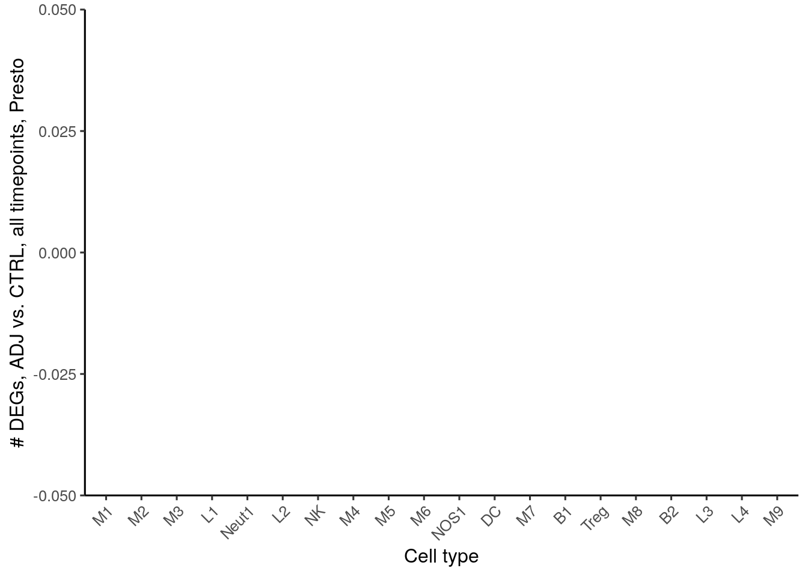
table(DEG_ADJ_CTRL_Seurat_df_sig$celltype) %>% as.data.frame() %>%
ggplot(aes(x = reorder(Var1, -Freq), y = Freq, fill = Var1)) +
geom_bar(stat = "identity") +
scale_fill_manual(values = plot_colors) +
theme_classic2() +
theme(axis.text.x = element_text(angle = 45, vjust = 1, hjust = 1)) +
NoLegend() +
xlab("Cell type") +
ylab("# DEGs, ADJ vs. CTRL, all timepoints, Seurat")
# Top DEGs for each cluster
DEG_ADJ_CTRL_df_sig %>% group_by(group) %>% slice_max(order_by = auc, n = 10)# A tibble: 0 × 11
# Groups: group [0]
# ℹ 11 variables: feature <chr>, group <chr>, avgExpr <dbl>, logFC <dbl>,
# statistic <dbl>, auc <dbl>, pval <dbl>, padj <dbl>, pct_in <dbl>,
# pct_out <dbl>, celltype <fct>DEG_ADJ_CTRL_Seurat_df_sig %>% group_by(celltype) %>% slice_max(order_by = avg_log2FC, n = 10)# A tibble: 104 × 7
# Groups: celltype [18]
p_val avg_log2FC pct.1 pct.2 p_val_adj feature celltype
<dbl> <dbl> <dbl> <dbl> <dbl> <chr> <fct>
1 7.63e-13 Inf 1 0.997 1.28e- 8 CTSD M1
2 1.21e-28 190. 0.994 0.991 2.03e-24 EEF1A1 M1
3 1.68e- 9 152. 1 0.999 2.82e- 5 COX3 M1
4 3.81e-22 113. 1 0.999 6.39e-18 CTSS M1
5 1.76e- 7 -108. 0.985 0.977 2.95e- 3 SSH2 M1
6 1.67e- 7 -109. 0.965 0.945 2.80e- 3 NPM1 M1
7 9.51e- 8 -132. 0.989 0.992 1.60e- 3 ZFHX3 M1
8 1.38e-16 -148. 1 1 2.32e-12 HEXB M1
9 5.61e-22 -191. 1 0.999 9.42e-18 LY86 M1
10 1.07e- 8 -Inf 0.996 0.994 1.80e- 4 FTH1 M1
# ℹ 94 more rows# Overlap of DEGs between NEO vs. CTRL and NEO vs. ADJ
intersect(DEG_NEO_ADJ_df_sig$feature, DEG_NEO_CTRL_df_sig$feature)[1] "CAMK1D" "LARS2" "GPHN" "CMSS1" "MALAT1" "FAU" inner_join(DEG_NEO_ADJ_df_sig, DEG_NEO_CTRL_df_sig, by = c('feature','celltype')) feature group.x avgExpr.x logFC.x statistic.x auc.x pval.x
1 CMSS1 NEO 44.07056 12.263930 820416.0 0.6909517 9.241756e-54
2 CMSS1 NEO 20.84229 6.881847 975180.5 0.7380351 8.505467e-85
3 CAMK1D NEO 23.73778 10.812127 45402.0 0.7501363 9.010737e-22
4 LARS2 NEO 15.74222 8.608393 50174.0 0.8289798 1.652220e-36
5 GPHN NEO 29.48444 13.692623 48887.0 0.8077158 4.291708e-32
6 CMSS1 NEO 58.76444 18.522809 43418.5 0.7173647 8.288666e-17
7 CMSS1 NEO 33.93677 9.080192 386584.5 0.6956537 2.241076e-36
8 CMSS1 NEO 28.52984 7.510545 113774.5 0.6615450 2.933183e-15
9 CMSS1 NEO 28.63731 8.067385 203700.0 0.6962008 2.334658e-27
10 CMSS1 NEO 20.09013 6.038908 319232.5 0.6745593 7.146759e-27
11 MALAT1 NEO 75.67647 42.574021 328727.5 0.6946229 5.706574e-34
12 CMSS1 NEO 21.71179 6.093442 1172275.5 0.6709183 1.980533e-51
13 CMSS1 NEO 32.62084 6.457997 744954.0 0.6247203 5.337960e-17
14 CMSS1 NEO 30.89175 8.981102 501512.0 0.7217599 3.238796e-50
15 CMSS1 NEO 26.30723 9.721572 88103.0 0.7048353 5.031976e-20
16 FAU NEO 46.76305 12.639546 75466.5 0.6037417 3.482375e-06
17 CMSS1 NEO 32.04228 6.929776 63913.5 0.6495274 5.389344e-09
padj.x pct_in.x pct_out.x celltype group.y avgExpr.y logFC.y
1 3.102827e-50 99.81185 99.82095 L2 NEO 44.07056 25.84567
2 1.427813e-80 99.10468 99.67033 M3 NEO 20.84229 11.63054
3 5.042108e-18 100.00000 99.62825 L3 NEO 23.73778 13.37384
4 2.773581e-32 100.00000 98.51301 L3 NEO 15.74222 10.21435
5 3.602245e-28 100.00000 98.88476 L3 NEO 29.48444 17.08117
6 3.478546e-13 100.00000 100.00000 L3 NEO 58.76444 35.87920
7 1.254031e-32 99.36766 99.20319 M5 NEO 33.93677 15.89116
8 1.230984e-11 99.63834 100.00000 B1 NEO 28.52984 13.58794
9 1.306397e-23 99.87047 99.73615 DC NEO 28.63731 14.15736
10 1.333029e-23 99.43074 98.44098 M4 NEO 20.09013 10.58342
11 3.193208e-30 81.59393 53.22940 M4 NEO 75.67647 17.17781
12 1.108240e-47 97.87898 99.26606 M1 NEO 21.71179 11.23514
13 1.066766e-14 99.74406 99.54128 M2 NEO 32.62084 14.67971
14 1.359242e-46 100.00000 99.80989 Neut1 NEO 30.89175 12.60470
15 4.223589e-16 99.59839 99.60159 NOS1 NEO 26.30723 14.63644
16 2.435776e-03 99.59839 98.00797 NOS1 NEO 46.76305 10.81802
17 1.159884e-06 99.67480 100.00000 M8 NEO 32.04228 12.92813
statistic.y auc.y pval.y padj.y pct_in.y pct_out.y
1 982892.0 0.8848227 1.226684e-205 2.059235e-201 99.81185 99.90431
2 2089805.0 0.8808199 2.906263e-293 4.878744e-289 99.10468 99.26561
3 56616.0 0.8250055 1.476869e-37 6.198049e-34 100.00000 99.34426
4 60629.0 0.8834827 1.068388e-51 8.967513e-48 100.00000 96.72131
5 59891.5 0.8727359 7.992881e-49 4.472550e-45 100.00000 99.67213
6 61586.0 0.8974281 3.141033e-55 5.272852e-51 100.00000 100.00000
7 840013.0 0.8239081 1.128347e-139 1.894157e-135 99.36766 99.56569
8 248815.5 0.7921437 2.317253e-64 3.889973e-60 99.63834 99.47183
9 496041.0 0.8312292 1.297642e-112 2.178352e-108 99.87047 99.87063
10 950305.0 0.8071778 1.119818e-135 1.879838e-131 99.43074 97.67234
11 695588.5 0.5908247 1.072953e-13 1.500972e-10 81.59393 67.94987
12 2802830.5 0.8083637 1.160786e-230 1.948611e-226 97.87898 98.01202
13 3113471.0 0.7883522 4.053702e-207 6.804950e-203 99.74406 99.51524
14 1575695.0 0.7962648 7.367929e-163 1.236854e-158 100.00000 99.73298
15 652640.0 0.8094639 2.858738e-97 4.798963e-93 99.59839 97.89994
16 474496.0 0.5885134 2.183414e-09 4.822760e-07 99.59839 99.19704
17 194134.5 0.7832900 6.583250e-53 1.105130e-48 99.67480 99.75186write.table(inner_join(DEG_NEO_ADJ_df_sig, DEG_NEO_CTRL_df_sig, by = c('feature','celltype')),
"/scratch/hnatri/CART/PD1_CART_DEG_NEO_ADJ_CTRL_overlap.tsv",
sep = "\t", quote = F, row.names = F)
# Overlap with Seurat
intersect(DEG_NEO_ADJ_Seurat_df_sig$feature, DEG_NEO_CTRL_Seurat_df_sig$feature) [1] "EEF1A1" "COX3" "ATP6" "COX1" "ACTG1" "ND4" "TMSB10" "FAU"
[9] "GPHN" "HEXB" "NAV3" "LY86" "C1QA" "CST3" "ACTB" "PLXDC2"
[17] "LARS2" "CMSS1" "PLAC8" "FCER1G" "ITM2B" "IFITM3" "UBB" "PTMA"
[25] "CTSD" "CD74" "LYZ" "C1QB" "C1QC" "GPNMB" "CSTB" "CAMK1D"
[33] "CSMD3" inner_join(DEG_NEO_ADJ_Seurat_df_sig, DEG_NEO_CTRL_Seurat_df_sig,
by = c('feature','celltype')) p_val.x avg_log2FC.x pct.1.x pct.2.x p_val_adj.x feature celltype
1 3.966681e-27 -259.6136 0.984 1.000 6.658868e-23 ACTG1 L2
2 1.228817e-27 106.0853 1.000 1.000 2.062816e-23 HEXB M3
3 2.364794e-22 -152.1571 0.925 0.947 3.969779e-18 NAV3 M3
4 1.166178e-19 -229.9925 1.000 1.000 1.957663e-15 LY86 M3
5 2.125357e-17 -100.2201 0.999 0.996 3.567837e-13 C1QA M3
6 1.229275e-14 113.2988 0.999 0.998 2.063584e-10 ACTB M3
7 1.129624e-11 359.9997 1.000 1.000 1.896300e-07 PLXDC2 M3
8 2.274650e-43 129.0535 0.944 0.925 3.818455e-39 LARS2 L1
9 5.786252e-30 103.9476 0.976 0.989 9.713381e-26 GPHN L1
10 5.634798e-08 124.1453 0.991 0.989 9.459136e-04 CMSS1 L1
11 1.094706e-16 374.0149 0.852 0.937 1.837682e-12 ITM2B M6
12 2.419081e-16 271.5835 0.781 0.897 4.060912e-12 CST3 M6
13 5.159923e-15 335.0621 0.927 0.937 8.661963e-11 FAU M6
14 3.735451e-10 -117.6887 0.993 0.994 6.270701e-06 CD74 B1
15 3.224185e-30 249.7978 0.551 0.247 5.412439e-26 PLAC8 M4
16 7.146759e-27 129.0493 0.994 0.984 1.199726e-22 CMSS1 M4
17 3.247347e-38 -133.2941 0.997 0.999 5.451321e-34 C1QB M1
18 3.680739e-10 189.8788 0.991 0.994 6.178857e-06 FCER1G M1
19 3.085565e-12 Inf 0.552 0.372 5.179738e-08 GPNMB M2
20 1.340781e-08 132.9642 0.986 0.968 2.250769e-04 CSTB M2
21 3.238796e-50 425.2534 1.000 0.998 5.436966e-46 CMSS1 Neut1
p_val.y avg_log2FC.y pct.1.y pct.2.y p_val_adj.y
1 8.473544e-08 198.8842 0.984 0.994 1.422454e-03
2 1.686818e-14 -262.4001 1.000 1.000 2.831661e-10
3 4.565600e-29 -115.2452 0.925 0.965 7.664273e-25
4 4.264387e-12 -478.7343 1.000 1.000 7.158626e-08
5 1.160230e-12 -239.3170 0.999 0.998 1.947679e-08
6 8.332439e-16 -Inf 0.999 0.999 1.398766e-11
7 1.824855e-08 161.7522 1.000 1.000 3.063384e-04
8 1.744941e-144 126.8739 0.944 0.851 2.929233e-140
9 1.199379e-131 125.8426 0.976 0.968 2.013397e-127
10 3.754804e-158 195.3417 0.991 0.988 6.303189e-154
11 1.150034e-07 257.1138 0.852 0.875 1.930563e-03
12 1.645691e-08 -328.6204 0.781 0.821 2.762622e-04
13 3.660547e-07 154.6825 0.927 0.919 6.144961e-03
14 2.630351e-08 -Inf 0.993 0.995 4.415570e-04
15 1.181236e-11 196.2202 0.551 0.389 1.982941e-07
16 1.119818e-135 138.5528 0.994 0.977 1.879838e-131
17 1.052123e-08 -151.0507 0.997 0.998 1.766199e-04
18 2.582953e-10 114.3955 0.991 0.989 4.336003e-06
19 4.325826e-07 Inf 0.552 0.467 7.261764e-03
20 5.554667e-08 -312.5436 0.986 0.983 9.324619e-04
21 7.367929e-163 386.8237 1.000 0.997 1.236854e-158write.table(inner_join(DEG_NEO_ADJ_Seurat_df_sig, DEG_NEO_CTRL_Seurat_df_sig,
by = c('feature','celltype')),
"/scratch/hnatri/CART/PD1_CART_DEG_NEO_ADJ_CTRL_overlap.tsv",
sep = "\t", quote = F, row.names = F)DEGs between treatment groups by timepoint
Comparing NEO vs. CTRL on Day 12 and NEO vs. CTRL, NEO vs. ADJ, and ADJ vs. CTRL on Day 16.
# A function for running the analysis
get_degs <- function(group1, group2, day){
# For each cluster, top DEGs between group1 and group2 on day x
# Using the Seurat function
DEG_list <- lapply(unique(seurat_data$celltype), function(xx){
data_subset <- subset(seurat_data, subset = celltype == xx)
data_subset <- subset(data_subset, subset = Day == day)
Idents(data_subset) <- data_subset$Treatment
if (all((c(group1, group2) %in% data_subset$Treatment) == c(T, T))){
markers <- FindMarkers(data_subset,
ident.1 = group1,
ident.2 = group2,
assay = "RNA_human",
verbose = F)
markers$feature <- rownames(markers)
markers$celltype <- xx
return(markers)
} else {
return(NULL)
}
})
names(DEG_list) <- unique(seurat_data$celltype)
DEG_list[sapply(DEG_list, is.null)] <- NULL
DEG_df <- as.data.frame(do.call(rbind, DEG_list))
DEG_df_sig <- DEG_df %>%
filter(p_val_adj < 0.01,
abs(avg_log2FC) > 100,
(pct.1 > 0.50 | pct.2 > 0.50))
# Saving to a file
filename <- paste0("/scratch/hnatri/CART/PD1_CART_DEG_", group1, "_", group2,
"_", day, "_Seurat_sig.tsv")
write.table(DEG_df_sig, filename,
sep = "\t", quote = F, row.names = F)
return(DEG_df_sig)
}
# For each comparison and timepoint, calling DEGs and plotting
DEG_NEO_CTRL_D12 <- get_degs(group1 = "NEO",
group2 = "CTRL",
day = 12)
DEG_NEO_CTRL_D16 <- get_degs(group1 = "NEO",
group2 = "CTRL",
day = 16)
DEG_NEO_ADJ_D16 <- get_degs(group1 = "NEO",
group2 = "ADJ",
day = 16)
DEG_ADJ_CTRL_D16 <- get_degs(group1 = "ADJ",
group2 = "CTRL",
day = 16)
length(unique(DEG_NEO_CTRL_D12$feature))[1] 33length(unique(DEG_NEO_CTRL_D16$feature))[1] 54length(unique(DEG_NEO_ADJ_D16$feature))[1] 64length(unique(DEG_ADJ_CTRL_D16$feature))[1] 48# Plotting
table(DEG_NEO_CTRL_D12$celltype) %>% as.data.frame() %>%
ggplot(aes(x = reorder(Var1, -Freq), y = Freq, fill = Var1)) +
geom_bar(stat = "identity") +
scale_fill_manual(values = plot_colors) +
theme_classic2() +
theme(axis.text.x = element_text(angle = 45, vjust = 1, hjust = 1)) +
NoLegend() +
xlab("Cell type") +
ylab("# DEGs NEO vs. CTRL, Day 12")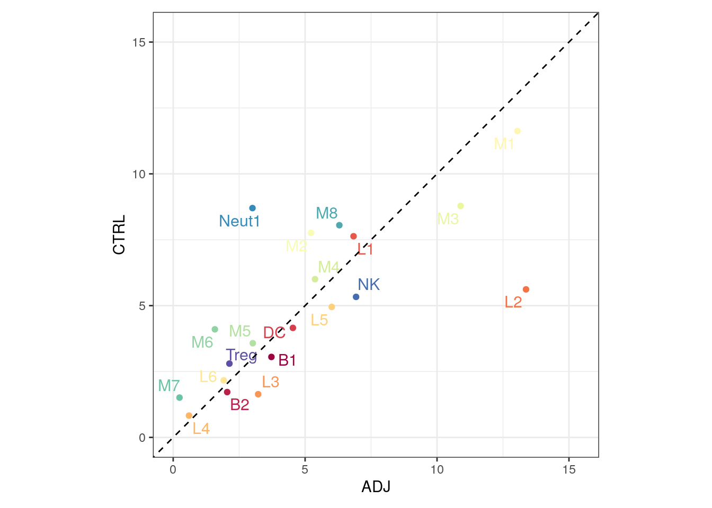
| Version | Author | Date |
|---|---|---|
| cef63a7 | heinin | 2024-03-19 |
table(DEG_NEO_CTRL_D16$celltype) %>% as.data.frame() %>%
ggplot(aes(x = reorder(Var1, -Freq), y = Freq, fill = Var1)) +
geom_bar(stat = "identity") +
scale_fill_manual(values = plot_colors) +
theme_classic2() +
theme(axis.text.x = element_text(angle = 45, vjust = 1, hjust = 1)) +
NoLegend() +
xlab("Cell type") +
ylab("# DEGs NEO vs. CTRL, Day 16")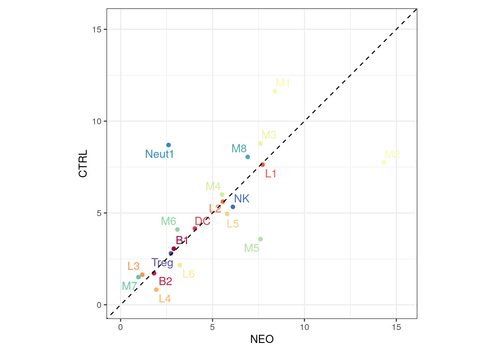
| Version | Author | Date |
|---|---|---|
| cef63a7 | heinin | 2024-03-19 |
table(DEG_NEO_ADJ_D16$celltype) %>% as.data.frame() %>%
ggplot(aes(x = reorder(Var1, -Freq), y = Freq, fill = Var1)) +
geom_bar(stat = "identity") +
scale_fill_manual(values = plot_colors) +
theme_classic2() +
theme(axis.text.x = element_text(angle = 45, vjust = 1, hjust = 1)) +
NoLegend() +
xlab("Cell type") +
ylab("# DEGs NEO vs. ADJ, Day 16")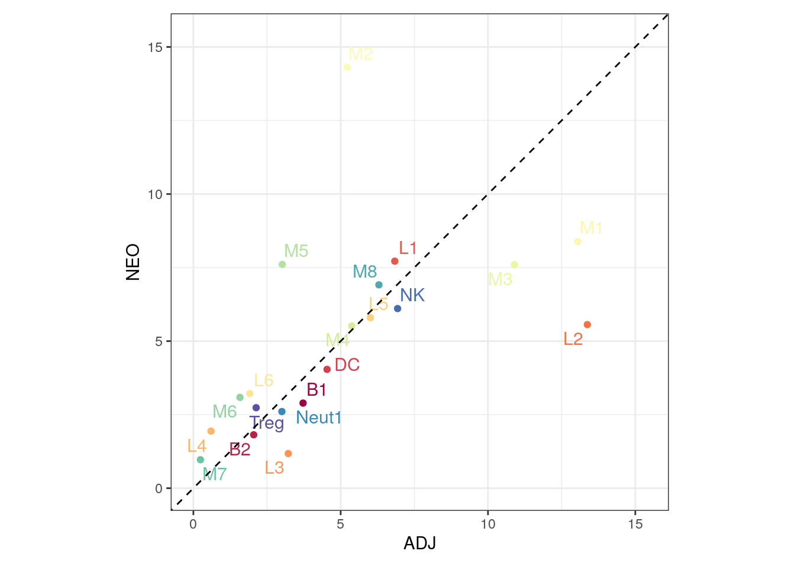
| Version | Author | Date |
|---|---|---|
| cef63a7 | heinin | 2024-03-19 |
table(DEG_ADJ_CTRL_D16$celltype) %>% as.data.frame() %>%
ggplot(aes(x = reorder(Var1, -Freq), y = Freq, fill = Var1)) +
geom_bar(stat = "identity") +
scale_fill_manual(values = plot_colors) +
theme_classic2() +
theme(axis.text.x = element_text(angle = 45, vjust = 1, hjust = 1)) +
NoLegend() +
xlab("Cell type") +
ylab("# DEGs ADJ vs. CTRL, Day 12=6")
| Version | Author | Date |
|---|---|---|
| cef63a7 | heinin | 2024-03-19 |
# Top DEGs for each cluster
#DEG_df_sig %>% group_by(celltype) %>% slice_max(order_by = avg_log2FC, n = 10)
# Overlap of significant DEGs in each comparison
input_list <- list("NEO vs. CTRL, Day 12" = DEG_NEO_CTRL_D12$feature,
"NEO vs. CTRL, Day 16" = DEG_NEO_CTRL_D16$feature,
"NEO vs. ADJ, Day 16" = DEG_NEO_ADJ_D16$feature,
"ADJ vs. CTRL, Day 16" = DEG_ADJ_CTRL_D16$feature)
upset(fromList(input_list), order.by = "freq")
| Version | Author | Date |
|---|---|---|
| cef63a7 | heinin | 2024-03-19 |
Human T cell canonical markers
# Canonical T cell markers
gs4_deauth()
canonical_markers <- gs4_get("https://docs.google.com/spreadsheets/d/186PIcU3Jb0Xm3IuZgENEChluykvwsK4JnHF8FbeJASA/edit?usp=sharing")
sheet_names(canonical_markers) [1] "T cells" "T cells, gene sets"
[3] "13384 product gene sets" "Luo et al."
[5] "Exhaustion" "Macrophage gene sets"
[7] "Tumor" "Angela T cells"
[9] "Myeloid/Lymphoid (excl. T cells)" "Info" canonical_markers <- read_sheet(canonical_markers, sheet = "T cells, gene sets")✔ Reading from "CAR T project cell type markers".✔ Range ''T cells, gene sets''.head(canonical_markers)# A tibble: 6 × 7
RNA Protein Marker_type Gene_sets Bigger_gene_sets Protein_type Note
<chr> <chr> <chr> <chr> <chr> <chr> <chr>
1 CD8A CD8 Tc <NA> Cytotoxic receptor <NA>
2 CD8B CD8 Tc <NA> Cytotoxic receptor <NA>
3 CD8B2 CD8 Tc <NA> Cytotoxic receptor <NA>
4 GNLY <NA> Tc <NA> Cytotoxic other <NA>
5 GZMB <NA> Tc <NA> Cytotoxic other <NA>
6 GZMH <NA> Tc/TNK <NA> Cytotoxic other <NA> # Overlapping with cluster markers
sig_markers %>% filter(feature %in% canonical_markers$RNA) feature group avgExpr logFC statistic auc pval
1 BTLA B1 2.819832 2.451013 53270252 0.8333870 0.000000e+00
2 SELL B2 4.937947 3.930917 31398107 0.8283679 0.000000e+00
3 ICOS L1 4.471437 3.884835 119733465 0.8108617 0.000000e+00
4 CD3D L1 6.326601 4.223792 121737508 0.8244336 0.000000e+00
5 CD3E L1 4.371321 3.000948 122100686 0.8268931 0.000000e+00
6 STAT4 L2 5.501705 3.662848 112624549 0.8151046 0.000000e+00
7 NKG7 L2 15.941395 12.806511 123419183 0.8932293 0.000000e+00
8 CD3D L2 10.119070 8.277972 123397668 0.8930735 0.000000e+00
9 CD3E L2 6.381705 5.145780 121161490 0.8768895 0.000000e+00
10 IL2RB L2 6.552868 4.819393 117359040 0.8493698 0.000000e+00
11 CD28 L3 4.533166 3.924949 30926318 0.8550095 0.000000e+00
12 CTLA4 L3 7.095119 6.309477 29457939 0.8144137 0.000000e+00
13 IKZF2 L3 29.190238 25.295517 29100812 0.8045404 5.421193e-247
14 TOX L3 16.262829 14.292937 29105263 0.8046634 1.170115e-305
15 TNFRSF9 L3 6.833542 6.255278 29718887 0.8216281 0.000000e+00
16 TNFRSF18 L3 5.161452 4.512479 30427185 0.8412102 0.000000e+00
17 NKG7 L3 26.106383 22.464611 31283052 0.8648720 0.000000e+00
18 ITGAL L3 5.914894 3.857129 29504929 0.8157128 5.638105e-223
19 MKI67 L3 18.627034 18.048129 34333974 0.9492198 0.000000e+00
20 CD3D L3 21.670839 19.590012 34159134 0.9443861 0.000000e+00
21 CD3E L3 13.697121 12.314550 33808550 0.9346936 0.000000e+00
22 IL2RB L3 13.021277 11.143698 33106946 0.9152966 0.000000e+00
23 LAG3 M1 5.020593 3.908881 167653373 0.8377210 0.000000e+00
24 IL2RB M5 6.216996 4.387073 89836868 0.8155595 0.000000e+00
25 PTPRC M8 30.775042 17.970627 43098701 0.8150038 1.061915e-299
26 MKI67 M9 12.376543 11.607068 21543860 0.9724882 0.000000e+00
27 ENTPD1 M9 10.506173 6.251626 18010500 0.8129926 5.791522e-129
28 NKG7 NK 16.894083 13.675464 108545254 0.9149106 0.000000e+00
29 PRF1 NK 5.254931 4.989393 108589986 0.9152877 0.000000e+00
30 GZMA NK 52.561359 49.296860 113350922 0.9554169 0.000000e+00
31 IL2RB NK 7.514974 5.788128 105529013 0.8894872 0.000000e+00
32 STAT4 Treg 14.828969 13.080669 48497993 0.8849509 0.000000e+00
33 CCR7 Treg 17.340426 17.222959 52537460 0.9586597 0.000000e+00
padj pct_in pct_out
1 0.000000e+00 77.16480 13.300625
2 0.000000e+00 85.79952 31.487254
3 0.000000e+00 74.23543 16.069291
4 0.000000e+00 90.30583 25.540455
5 0.000000e+00 89.03635 22.564139
6 0.000000e+00 92.06202 35.491551
7 0.000000e+00 98.13953 27.842872
8 0.000000e+00 94.38760 25.597517
9 0.000000e+00 92.62016 22.668285
10 0.000000e+00 94.82171 30.328634
11 0.000000e+00 85.73217 22.122819
12 0.000000e+00 78.22278 22.997570
13 7.679795e-246 82.97872 38.639275
14 2.705608e-304 79.47434 27.075326
15 0.000000e+00 75.46934 15.754363
16 0.000000e+00 84.73091 24.996687
17 0.000000e+00 88.98623 31.771593
18 6.572700e-222 95.86984 58.756351
19 0.000000e+00 93.99249 13.569693
20 0.000000e+00 96.12015 29.253369
21 0.000000e+00 95.11890 26.372874
22 0.000000e+00 98.87359 33.713276
23 0.000000e+00 90.03295 32.844006
24 0.000000e+00 90.63241 31.601553
25 2.922355e-297 99.23599 94.520060
26 0.000000e+00 99.58848 14.062260
27 1.215278e-127 99.58848 69.786982
28 0.000000e+00 99.63477 28.538460
29 0.000000e+00 88.64134 9.438970
30 0.000000e+00 96.20161 16.288569
31 0.000000e+00 98.39299 30.827814
32 0.000000e+00 92.47136 38.007002
33 0.000000e+00 92.88052 5.779651canonical_markers %>% filter(RNA %in% sig_markers$feature) %>% as.data.frame() RNA Protein Marker_type Gene_sets
1 NKG7 <NA> Tc <NA>
2 PRF1 <NA> Tc <NA>
3 CTLA4 CD152-CTLA-4 Trm/Tregs/Tex Dysfunction
4 LAG3 CD223-LAG-3 Tex Dysfunction
5 TNFRSF18 CD357-GITR Tex <NA>
6 ENTPD1 CD39 Tex <NA>
7 TOX <NA> Tex <NA>
8 IL2RB CD122-IL-2RB Tact/Tscm/Tcm/Tem/Teff <NA>
9 CCR7 CD197-CCR7 Tnmem/Tscm/Tcm <NA>
10 CD28 CD28 Tnmem/Tscm/Tcm/Tem/Teff <NA>
11 PTPRC CD45RA Tnmem/resting_Tregs/Tscm/Tem/Teff <NA>
12 PTPRC CD45RO Tmem/Tact <NA>
13 SELL CD62L Tnmem/Tscm/Tcm <NA>
14 STAT4 <NA> Th1 Memory
15 ITGAL CD11a Tem/Teff/Tcm/Trm/Tscm <NA>
16 TNFRSF9 CD137-4-1BB Tact <NA>
17 BTLA CD272-BTLA Tex <NA>
18 ICOS CD278-ICOS Tact,Th2 <NA>
19 CD3E CD3 PanT <NA>
20 CD3D CD3 PanT <NA>
21 GZMA <NA> Tem/Teff <NA>
22 MKI67 <NA> Tact <NA>
23 CTLA4 <NA> Treg <NA>
24 IKZF2 <NA> Treg <NA>
Bigger_gene_sets Protein_type Note
1 Cytotoxic other <NA>
2 Cytotoxic other <NA>
3 Dysfunction receptor <NA>
4 Dysfunction receptor <NA>
5 Dysfunction receptor <NA>
6 Dysfunction other <NA>
7 Dysfunction tf <NA>
8 Memory receptor <NA>
9 Memory receptor <NA>
10 Memory receptor <NA>
11 Memory receptor Splice variant
12 Memory receptor Splice variant
13 Memory receptor <NA>
14 Memory tf <NA>
15 <NA> receptor <NA>
16 <NA> receptor <NA>
17 <NA> receptor <NA>
18 <NA> receptor <NA>
19 <NA> receptor NK cells don't express CD3
20 <NA> receptor NK cells don't express CD3
21 <NA> other <NA>
22 <NA> other <NA>
23 Treg <NA> <NA>
24 Treg <NA> <NA># Overlapping with DEGs
DEG_NEO_CTRL_df_sig %>% filter(feature %in% canonical_markers$RNA) feature group avgExpr logFC statistic auc pval
L3.19986 TOX NEO 25.27111 14.89078 42957.5 0.6259745 6.206806e-07
padj pct_in pct_out celltype
L3.19986 0.0008682804 83.55556 77.04918 L3DEG_NEO_ADJ_df_sig %>% filter(feature %in% canonical_markers$RNA) feature group avgExpr logFC statistic auc pval
NOS1.22600 FOXP1 NEO 4.574297 1.948799 76120.5 0.6089737 4.691125e-07
M8.31609 TNF NEO 1.978862 1.285112 63298.0 0.6432724 2.170169e-09
padj pct_in pct_out celltype
NOS1.22600 5.249994e-04 66.86747 49.40239 NOS1
M8.31609 5.692287e-07 55.93496 31.87500 M8# Overlapping with DEGs from the Seurat analysis
DEG_NEO_CTRL_Seurat_df_sig %>% filter(feature %in% canonical_markers$RNA)[1] p_val avg_log2FC pct.1 pct.2 p_val_adj feature celltype
<0 rows> (or 0-length row.names)DEG_NEO_ADJ_Seurat_df_sig %>% filter(feature %in% canonical_markers$RNA) p_val avg_log2FC pct.1 pct.2 p_val_adj feature celltype
L2.FOXP1 2.494498e-10 190.5059 0.937 0.965 4.187514e-06 FOXP1 L2
L2.PTPRC 2.728027e-10 101.0505 0.999 0.999 4.579539e-06 PTPRC L2
sessionInfo()R version 4.3.0 (2023-04-21)
Platform: x86_64-pc-linux-gnu (64-bit)
Running under: Ubuntu 22.04.3 LTS
Matrix products: default
BLAS: /usr/lib/x86_64-linux-gnu/openblas-pthread/libblas.so.3
LAPACK: /usr/lib/x86_64-linux-gnu/openblas-pthread/libopenblasp-r0.3.20.so; LAPACK version 3.10.0
locale:
[1] LC_CTYPE=en_US.UTF-8 LC_NUMERIC=C
[3] LC_TIME=en_US.UTF-8 LC_COLLATE=en_US.UTF-8
[5] LC_MONETARY=en_US.UTF-8 LC_MESSAGES=en_US.UTF-8
[7] LC_PAPER=en_US.UTF-8 LC_NAME=C
[9] LC_ADDRESS=C LC_TELEPHONE=C
[11] LC_MEASUREMENT=en_US.UTF-8 LC_IDENTIFICATION=C
time zone: Etc/UTC
tzcode source: system (glibc)
attached base packages:
[1] grid stats graphics grDevices utils datasets methods
[8] base
other attached packages:
[1] ComplexHeatmap_2.18.0 viridis_0.6.3
[3] viridisLite_0.4.2 circlize_0.4.15
[5] plyr_1.8.8 RColorBrewer_1.1-3
[7] UpSetR_1.4.0 scProportionTest_0.0.0.9000
[9] googlesheets4_1.1.0 workflowr_1.7.1
[11] ggrepel_0.9.3 ggpubr_0.6.0
[13] lubridate_1.9.2 forcats_1.0.0
[15] stringr_1.5.0 dplyr_1.1.2
[17] purrr_1.0.2 readr_2.1.4
[19] tidyr_1.3.0 tibble_3.2.1
[21] ggplot2_3.4.2 tidyverse_2.0.0
[23] SeuratDisk_0.0.0.9021 Seurat_5.0.1
[25] SeuratObject_5.0.1 sp_1.6-1
loaded via a namespace (and not attached):
[1] RcppAnnoy_0.0.20 splines_4.3.0 later_1.3.1
[4] cellranger_1.1.0 polyclip_1.10-4 fastDummies_1.7.3
[7] lifecycle_1.0.3 rstatix_0.7.2 doParallel_1.0.17
[10] rprojroot_2.0.3 globals_0.16.2 processx_3.8.1
[13] lattice_0.21-8 hdf5r_1.3.8 MASS_7.3-60
[16] backports_1.4.1 magrittr_2.0.3 limma_3.58.1
[19] plotly_4.10.2 sass_0.4.6 rmarkdown_2.22
[22] jquerylib_0.1.4 yaml_2.3.7 httpuv_1.6.11
[25] sctransform_0.4.1 spam_2.9-1 spatstat.sparse_3.0-1
[28] reticulate_1.29 cowplot_1.1.1 pbapply_1.7-0
[31] abind_1.4-5 Rtsne_0.16 presto_1.0.0
[34] BiocGenerics_0.48.1 git2r_0.32.0 S4Vectors_0.40.2
[37] IRanges_2.36.0 irlba_2.3.5.1 listenv_0.9.0
[40] spatstat.utils_3.0-3 goftest_1.2-3 RSpectra_0.16-1
[43] spatstat.random_3.1-5 fitdistrplus_1.1-11 parallelly_1.36.0
[46] leiden_0.4.3 codetools_0.2-19 tidyselect_1.2.0
[49] shape_1.4.6 farver_2.1.1 stats4_4.3.0
[52] matrixStats_1.0.0 spatstat.explore_3.2-1 googledrive_2.1.0
[55] jsonlite_1.8.5 GetoptLong_1.0.5 ellipsis_0.3.2
[58] progressr_0.13.0 iterators_1.0.14 ggridges_0.5.4
[61] survival_3.5-5 foreach_1.5.2 tools_4.3.0
[64] ica_1.0-3 Rcpp_1.0.10 glue_1.6.2
[67] gridExtra_2.3 xfun_0.39 withr_2.5.0
[70] fastmap_1.1.1 fansi_1.0.4 callr_3.7.3
[73] digest_0.6.31 timechange_0.2.0 R6_2.5.1
[76] mime_0.12 colorspace_2.1-0 scattermore_1.2
[79] tensor_1.5 spatstat.data_3.0-1 utf8_1.2.3
[82] generics_0.1.3 data.table_1.14.8 httr_1.4.6
[85] htmlwidgets_1.6.2 whisker_0.4.1 uwot_0.1.14
[88] pkgconfig_2.0.3 gtable_0.3.3 lmtest_0.9-40
[91] htmltools_0.5.5 carData_3.0-5 dotCall64_1.0-2
[94] clue_0.3-64 scales_1.2.1 png_0.1-8
[97] knitr_1.43 rstudioapi_0.14 rjson_0.2.21
[100] tzdb_0.4.0 reshape2_1.4.4 curl_5.0.1
[103] nlme_3.1-162 cachem_1.0.8 zoo_1.8-12
[106] GlobalOptions_0.1.2 KernSmooth_2.23-21 parallel_4.3.0
[109] miniUI_0.1.1.1 pillar_1.9.0 vctrs_0.6.5
[112] RANN_2.6.1 promises_1.2.0.1 car_3.1-2
[115] xtable_1.8-4 cluster_2.1.4 evaluate_0.21
[118] cli_3.6.1 compiler_4.3.0 rlang_1.1.1
[121] crayon_1.5.2 future.apply_1.11.0 ggsignif_0.6.4
[124] labeling_0.4.2 ps_1.7.5 getPass_0.2-4
[127] fs_1.6.2 stringi_1.7.12 deldir_1.0-9
[130] munsell_0.5.0 lazyeval_0.2.2 spatstat.geom_3.2-1
[133] Matrix_1.6-5 RcppHNSW_0.5.0 hms_1.1.3
[136] patchwork_1.1.2 bit64_4.0.5 future_1.32.0
[139] statmod_1.5.0 shiny_1.7.4 highr_0.10
[142] ROCR_1.0-11 gargle_1.4.0 igraph_1.4.3
[145] broom_1.0.4 bslib_0.4.2 bit_4.0.5